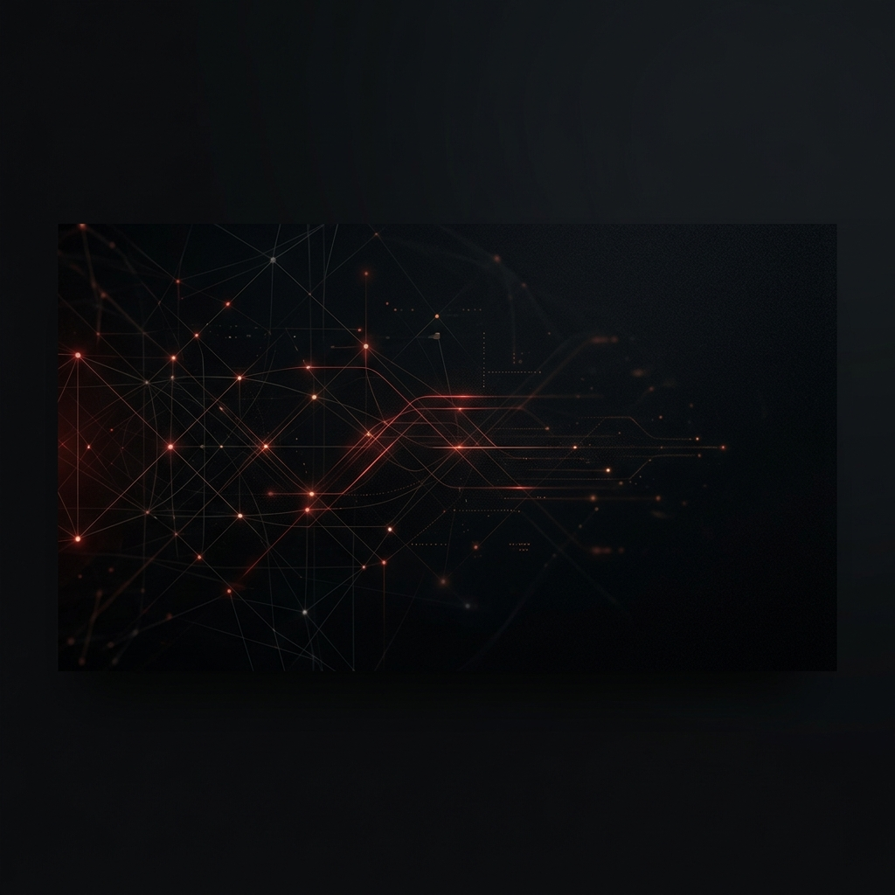

Fabricação de equipamentos
Desenvolvimento e fornecimento de produtos de telecomunicações para redes públicas e privadas.

Fabricação e tecnologia para telecomunicações, com produtos para redes públicas e privadas.
Falar com a TORA TOR Tecnologia e Indústria fabrica equipamentos e desenvolve soluções para telecomunicações, unindo conhecimento técnico, inovação e compromisso com o mercado brasileiro.
Estamos em crescimento contínuo, ampliando nosso portfólio para atender provedores, data centers, redes corporativas, integradores e projetos públicos com produtos confiáveis e documentação técnica clara.
Nossa atuação aproxima tecnologia, fabricação e suporte especializado para que cada projeto tenha a solução adequada à sua realidade operacional.
Produtos fabricados para redes que precisam de desempenho, compatibilidade e clareza técnica.
O catálogo destaca módulos SFP e QSFP por taxa, alcance, conector e tipo de fibra para facilitar a comparação técnica.
Os produtos TOR possuem caminho direto para consulta do datasheet quando o documento está disponível no site.
Nossa equipe auxilia na escolha do melhor produto fabricado pela TOR para a demanda informada pelo cliente.
Uma estrutura pensada para apoiar a compra e a aplicação dos produtos TOR.
Desenvolvimento e fornecimento de produtos de telecomunicações para redes públicas e privadas.
Organização dos itens por família, velocidade, alcance, fibra e conector para facilitar a consulta.
Disponibilização de informações técnicas para apoiar a análise do comprador.
Contato direto para dúvidas sobre produto, compatibilidade, cotação e disponibilidade.
Áreas onde os equipamentos TOR podem ser aplicados conforme a necessidade técnica do projeto.

Módulos ópticos para expansão de rede, enlaces entre equipamentos e crescimento do portfólio B2B.
Produtos SFP e QSFP para ambientes que exigem maior velocidade, organização e confiabilidade.

Equipamentos para projetos com requisitos técnicos definidos, documentação e atendimento comercial.
Canais para acompanhar materiais técnicos, atualizações e publicações institucionais da TOR.
Fale com a TOR para cotação, dúvidas técnicas ou informações sobre produtos.